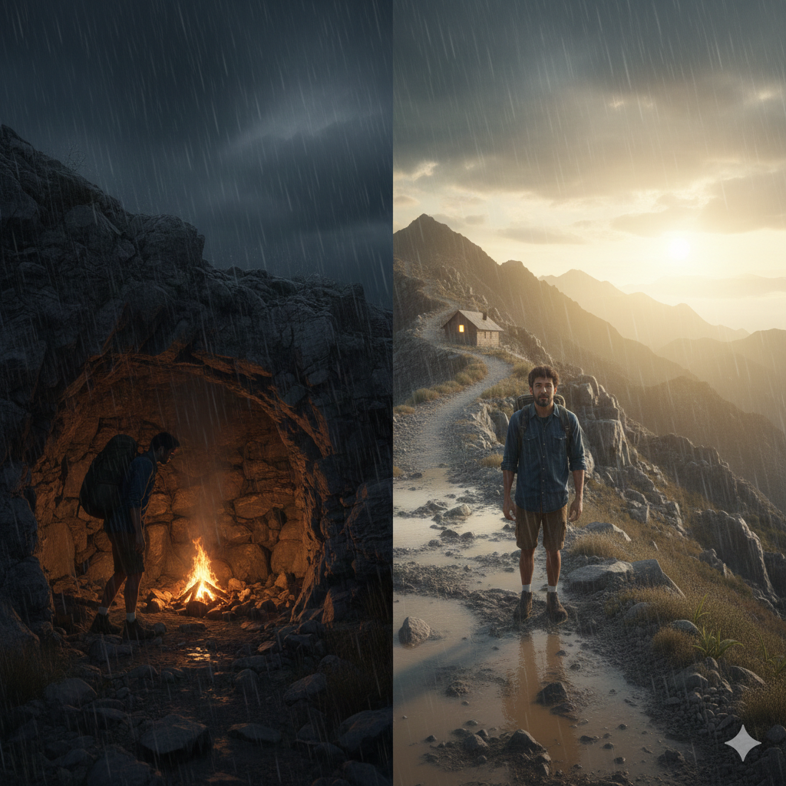

Pipo busca un refugio para protegerse de la lluvia y encuentra una pequeña cueva entre las rocas de la montaña.
Dentro de la cueva, Pipo encuentra madera y piedras para hacer una fogata. Pipo enciende la fogata y descansa mientras para la lluvia.
Pipo pasa la noche en la cueva y cuando sale, la lluvia ya había parado y el camino estaba libre.